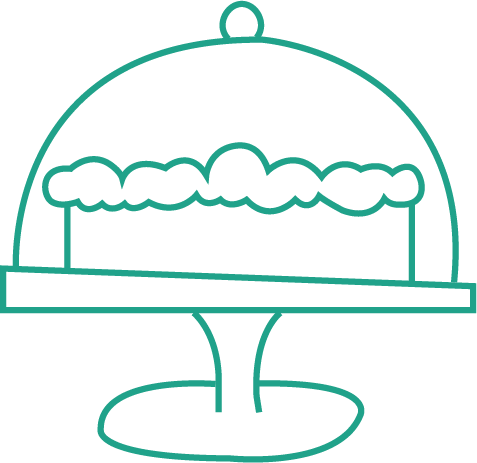

Just as important as knowing how to make a great cake is having the right tools for the job and knowing how to use them. No matter what kind of cake you plan to bake, these seven tools (many of which you probably already have) will set you up for sweet success.
1. Stand Mixer or Hand Mixer
2. Rubber or Silicon Spatula
3. Cake Pans
4. Cake Tester or Toothpicks
5. Paring Knife
6. Wire Cooling Racks
7. Metal Spatula